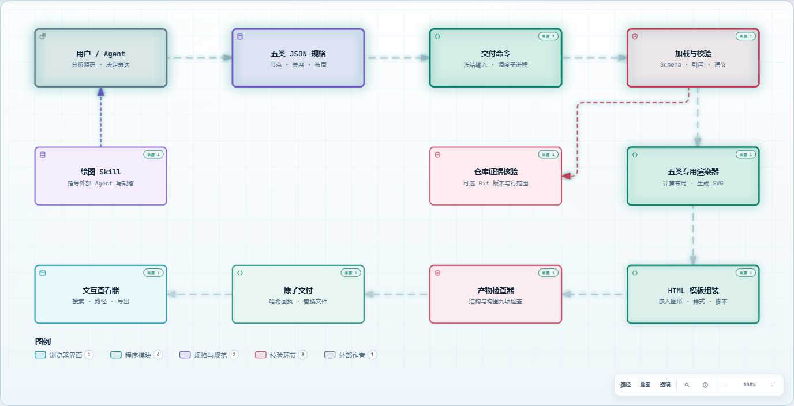
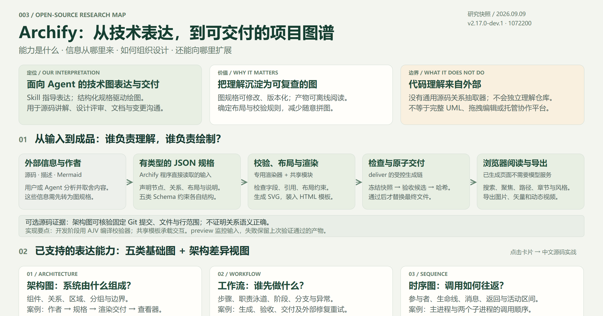

架构图
系统由什么组成？组件、依赖、区域、分组与边界。架构节点可附固定提交的源码引用。
ARCHIFY / CAPABILITIES & REAL CASES
Archify 将已经整理好的技术信息，转成可交互、可校验、可交付的图。这里把原库样例和我们的两个源码案例放在一起，展示效果，也说明信息从哪里来。
分析版本 2.17.0-dev.1 · 固定提交 1072200 · 2026.09.09

01 / WHAT IT DOES
架构差异是比较视图；风格、搜索和导出是配套能力。
组件、依赖、区域、分组与边界。架构节点可附固定提交的源码引用。
步骤、职责泳道、阶段、主路径、分支与异常处理。
参与者、生命线、消息、返回与活动区间；表达顺序，不等于测量耗时。
来源、转换阶段、存储、流向与标签，关注中间产物及最终输出。
阶段、活动、等待、决策、成功、失败和退出路径。
两份架构规格中的新增、删除、修改、位置移动和连线路径变化。
源码讲解、系统设计评审、技术文档、交接培训与架构变更沟通。图规格可修改、可版本化，已生成页面可独立阅读。
用户、Agent 或外部工具先整理事实，再写入 JSON。Archify 本身没有通用源码关系抽取器，也不是完整的 UML 工具集。
02 / UPSTREAM EXAMPLES
保留上游样例的英文节点、关系与布局，将五类图标题和查看器语言设为中文。所有预览对应真实生成的 HTML；点开即可操作，旁边保留图规格与生成记录。
来源：固定版本 examples。这些是能力示例，不是本研究自动发现的真实运行系统。查看来源清单 ↗
03 / OUR CASE 01
分析整个研究室如何创建子项目、维护清单、组合网页并发布。这类项目先画架构图最有价值：它能把零散的目录、脚本和工作流连起来。
本次由 Agent 阅读代码后编写图规格；箭头主要表达职责和数据流。程序核验源码定位，不证明所有语义判断。案例固定在机制源码提交 855cde3。
04 / OUR CASE 02
同一份源码，从模块、流程、交互、数据和生命周期观察；再用一次真实提交展示架构差异。这里的节点与讲解均为中文。
WHAT CHANGED?
真实提交 b86b607 → 1072200 将在线字体改为内嵌字体。Before 看原结构，Delta 高亮变化，After 看新结构。
比较的是根据代码编写的两份架构 JSON；不会自动读取 Git diff 并理解影响。新增／删除计数同时包括节点与连线。中文仍使用系统字体回退。
05 / HOW IT WORKS
源码、系统描述、文档或 Mermaid，经用户／Agent 理解和取舍。
声明节点、关系、布局、说明和章节。这是程序直接读取的输入。
专用渲染器处理各类布局，生成 SVG 并装入共享 HTML 模板。
冻结快照、验收候选、计算哈希；通过后原子替换最终文件。
Skill 指导 Agent 表达；五类 Schema 约束输入。开发阶段通过 AJV 编译校验器，运行时使用生成的校验逻辑。
架构图可核验固定提交、仓库地址、文件与行号。其他图的代码依据由作者另行整理。引用有效不等于结论被证明。
共享模板嵌入样式、图形和交互脚本。阅读已生成图不需要模型；上下游与路径查询只遍历声明过的关系。
06 / READ, EXPORT & VERIFY

完整图形、分享卡片与约 6 秒连线动效，均实际调用查看器原生实现生成。
本次 Chrome 实测中，工具栏操作会清除聚焦，键盘确认也未完成范围分享。上述卡片通过原生导出接口生成；菜单问题没有修改上游实现。剪贴板复制取决于浏览器权限。
07 / DESIGN SYSTEMS
一个视图可以有多张图；进程视图不是普通流程图。
原始论文 ↗Container 不专指 Docker；按项目需要采用层级，并补充动态与部署视图。
C4 官方说明 ↗结构：类、对象、包、组件、组合结构、部署、轮廓。
行为：用例、活动、状态机，以及顺序、通信、交互概览、定时等交互图。
它是建模语言。Archify 的五类技术图不等于支持全部 UML 语义。
OMG 规范 ↗arc42 组织目标、约束、结构、运行、部署、决策、质量与风险；BPMN 表达业务流程；SysML 面向软硬件系统工程；ArchiMate 连接企业业务、应用与技术；TOGAF 提供企业架构方法和治理框架。
分层、微服务、事件驱动、六边形架构属于设计风格。我们的建议是：C4 组织深度，4+1 检查关注点，必要的 UML 图表达细节，arc42 保存设计理由。
08 / WHAT TO ADD
| 分析维度 | 可补充的图 | 需要什么信息 | 扩展方式 |
|---|---|---|---|
| 业务与目标 | 上下文、用例、BPMN | 需求、角色、业务规则 | 复用架构／新增专用语义 |
| 结构与部署 | C4 各层、组件、部署拓扑 | 模块设计、部署配置 | 细化架构图与层级关联 |
| 代码与接口 | 包依赖、函数调用、类与接口 | 引用解析、静态分析、追踪 | 关系图复用／类图新增 |
| 数据与契约 | ER、规格结构、API 契约、血缘 | 数据库、Schema、转换逻辑 | 深化数据流／ER 新增 |
| 运行与异常 | 时序、完整状态机、并发与恢复 | 控制逻辑、事件、运行日志 | 深化时序、条件与状态 |
| 安全与验证 | 权限、信任边界、需求—实现—测试 | 身份配置、跨对象关联 | 复用边界／增加追踪模型 |
| 性能与变化 | 热点、火焰图、版本差异 | 性能测量、调用栈、前后模型 | 性能新增／架构差异已有 |
| 项目与演进 | 功能树、路线图、甘特图 | 功能、计划、时间和决策 | 树图与时间轴新增 |
源码分析、数据库、OpenAPI、部署配置、运行追踪。保留来源、版本、推断和未知项。
增加专用 Schema、关系和约束，再接入布局、诊断与测试。方框模拟外观不等于语义支持。
稳定 ID、总览到模块的跳转、跨图引用、场景阅读、版本和测试证据。
对 Archify 自身，下一层最有价值的是：模块依赖图 → 关键函数调用图 → 五类规格结构图 → 预览状态机 → 新图型接入图。增加图型不会自动获得数据来源；深入程度取决于分析质量和层级拆分。
09 / TAKE IT WITH YOU

一页图：用于分享与留存 ↗一页图保留为总结资料，完整展示与说明在当前页面展开。与此前研究的 Lieflat Charts 相比，Archify 侧重技术系统的结构与过程，后者侧重数据、指标与报告。
图校验不证明整个系统正确；源码引用有效不证明关系语义正确；图上可达不等于生产故障影响。本研究保留事实、推断与建议的区别。原库样例、真实案例与总览资料分别标明来源。


{kind=link}
{kind=link}
{kind=link}
{kind=link}
{kind=link}
{kind=link}